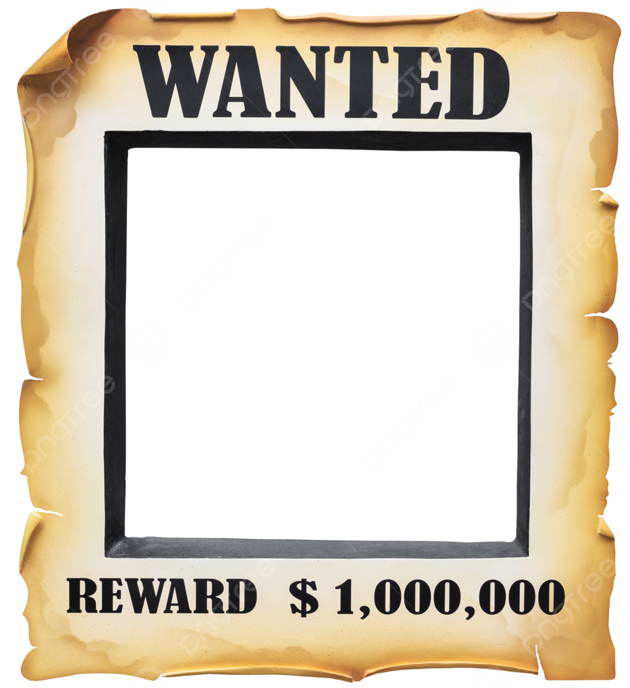
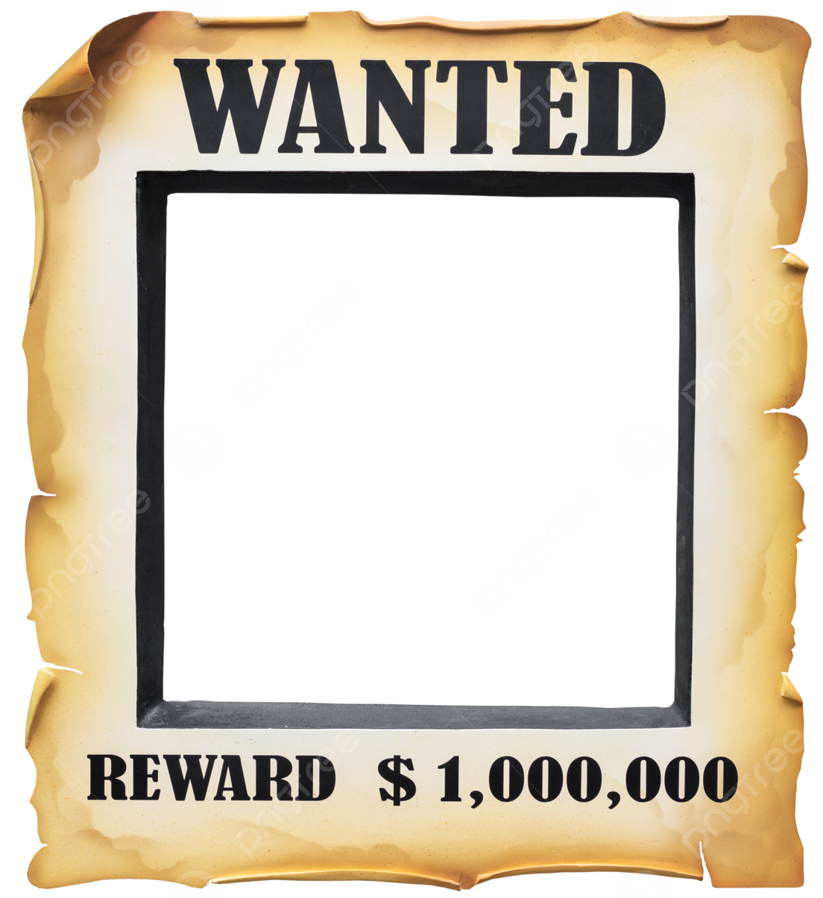

King Kuma
The tyrannical bear king who founded the Court of Truths after being insulted with the word "LIAR." King Kuma leads the fight to erase Yusufish culture with ruthless laws and dark magic. His paranoia fuels his unending hunt for Liars.
"Raise thy paws high, for thou art truly welcome!"